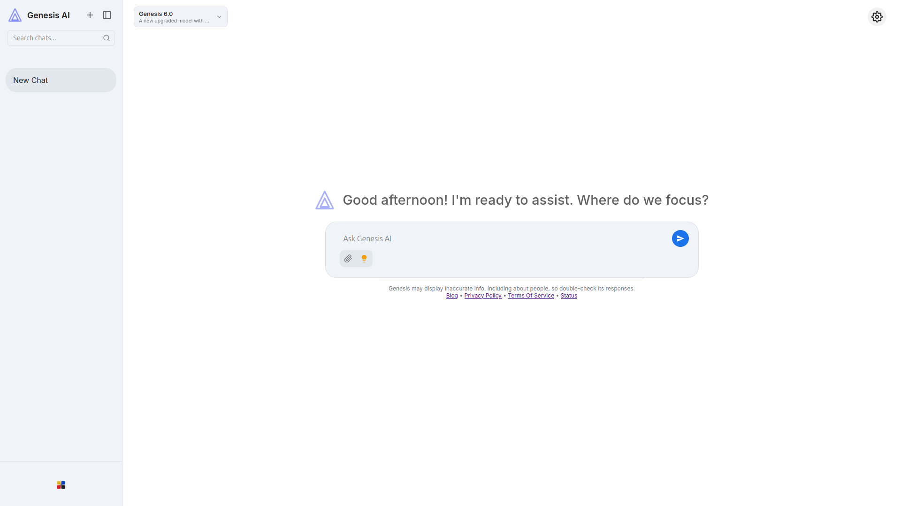

Genesis-AI is an experimental web-based AI platform that runs entirely in your browser. It uses structured JSON models instead of large neural networks, so you can read, edit, and understand how responses are generated.
This is an example blog post to demonstrate the blog section on the landing page. You can add more posts to the blog folder and link them from the landing page.

Try the chat to see how pattern matching, Wikipedia lookups, and AI commands work together.